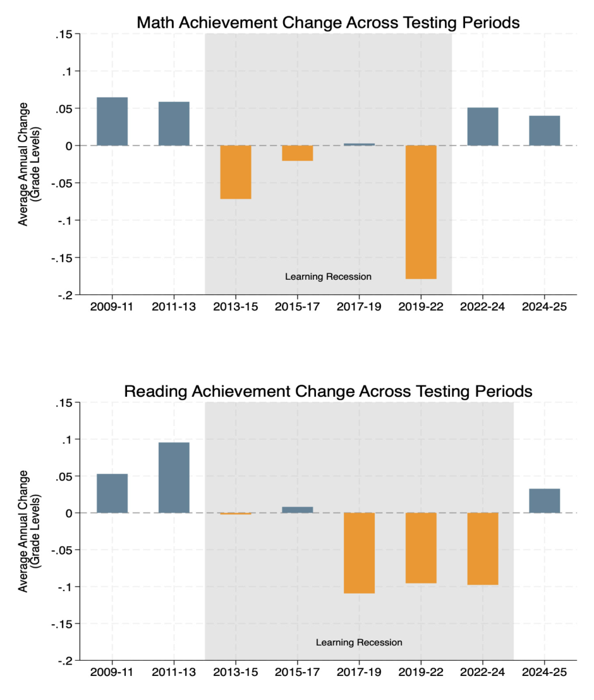
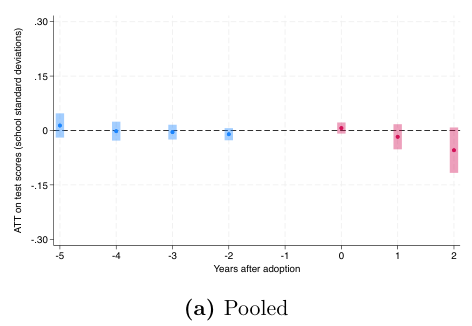

Kane and Staiger’s phone-ban “half” counts the pandemic years
Set beside NAEP’s eighth-grade math record, the “half of the historical loss” that their release says in-school phones may account for exceeds the whole 2013–19 decline.
Two studies of Yondr’s pouch schools
Two research teams have used records from Yondr, which sells lockable phone pouches to schools, to ask whether test scores rose where pouches went in. In April, Hunt Allcott and five co-authors, among them Thomas Dee and Brian Jacob, found effects on test scores “consistently close to zero”.1 On 17 November, Thomas Kane of Harvard’s Center for Education Policy Research and Douglas Staiger of Dartmouth reported a gain, under a headline saying in-school phone use “may account for half of the historical loss” since 2013.23
The release’s body calls the gain “about half of the annual decline”, a ratio of two yearly rates measured over different years. Its headline applies that ratio to the whole loss since 2013.2 On NAEP, eighth graders have lost 11 math points since 2013, 8 of them after 2019, so half that loss is more than everything lost before the pandemic.45 Harvard’s site refused automated downloads of the report, so the study’s figures come from the release and from Kane’s interviews.
Where “half” comes from
The study tracks about 3.3 million students on NWEA’s MAP Growth math and reading tests from 2021–22 to 2025–26. Schools requiring pouches saw “an annual boost in achievement growth of 0.01 standard deviations”, set against a decline of “approximately 0.01 to 0.02 standard deviations per year” from 2013 to 2024.2
The share runs from half, if the decline was 0.02 a year, to all of it, if it was 0.01, so “half” is the release’s cautious end. Kane put the decline at “about two-hundredths of a standard deviation, year after year”, which gives exactly half.3 The weeks are looser: 0.01 is “1–2 weeks” as the gain and the bottom of “2–3 weeks” as the decline.2 On a normal distribution, 0.01 standard deviations moves a median student to about the 50.4th percentile.
The pandemic inside “since 2013”
The release does not name the data behind eighth graders’ “gradual” loss of one grade equivalent since 2013,2 but NAEP, the national record the same authors charted in May, matches it.6 Eighth-grade math stood at 285 in 2013 and 282 in 2019,4 then fell 8 points by 2022 and held through 2024.5 At Kane and Staiger’s own conversion of about 10 NAEP points to a grade level, that 11-point loss is the release’s grade equivalent.6 Half of 11 points is 5.5, more than the 3 lost from 2013 to 2019. Even if phones in class explained the whole 2013–19 decline, they would still need 2.5 of the 8 points lost in 2019–22.

Reading fell from 268 in 2013 to 263 in 2019, then 5 more points by 2024, so half the reading loss equals the pre-pandemic decline.57 The May report finds the annual reading decline similar before, during and after the pandemic (Fig. 2).6
What the April study rules out
Allcott’s team took Yondr’s records of 4,608 pouch-buying schools and ran a pre-registered staggered difference-in-differences on the 2023–25 adopters against never-adopting schools, using school-level state tests in middle and high school. Pre-adoption coefficients are “small and statistically indistinguishable from zero” (Fig. 3), and the authors rule out gains above about 0.007 student-level standard deviations over the first three years.1

The pouches did cut use: teacher-reported personal phone use in class fell from 61% to 13%.1 Kane and Staiger measure growth on student-level MAP Growth scores. Allcott’s team measures levels on school-level state tests, halved to reach student units.12 A growth gain lasting three years would raise levels, and the April event study shows no rise, but neither paper puts the two on one scale. They also disagree on middle schools. The release finds no significant difference across school levels, and the April study puts middle schools at −0.025 school-level standard deviations (standard error 0.012).12
Jacob called the new study “encouraging”. Dee hopes “these very small test score gains will aggregate and add up over time” but is “not comfortable making that extrapolation from estimates that are small, sensitive and based on just a few years of phone bans.”89
| Study | Test scores | Setting |
|---|---|---|
| Beland, Murphy 2015 | +6.41% SD, mostly the lowest achievers | Four English cities, difference-in-differences |
| Figlio, Özek 2025 | About +0.6 percentiles | One Florida district |
| Goodyear et al. 2025 | No significant difference | 30 English schools, cross-sectional |
| Abrahamsson 2024 | Higher grades for girls | Norway, event study |
The test Kane and Staiger set in May
Thus, if achievement were to rise sharply following a cell phone ban, it would imply that social media had played a role in the original decline, operating through distractions in class.
The same report says that if social media played a role, the mechanism was likely “not just through students being distracted by cell phones during instructional time”.6
Kane says the pouch effect did not differ significantly between the first year of a ban and later ones, with few schools yet in a third or fourth year.3 The state-ban gains, 0.016 in reading under bell-to-bell bans and 0.019 in math under instructional-time bans, carry the authors’ caution that they “might be confounded by pre-existing trends”.2 Kane calls the pouch gain “a relatively small effect”.3 By the test he and Staiger set in May, it is not the sharp rise that would tie the decline to distractions in class.
Sources
- NBER w35132 · Allcott et al., “The Effects of School Phone Bans” (2026)
- CEPR at Harvard · press release, 17 Nov 2026
- Harvard Gazette · Kane interview, 17 Nov 2026
- NCES · Digest Table 222.10, NAEP math
- NAGB · 2024 NAEP results release
- Education Scorecard · Dewey et al., May 2026
- NCES · Digest Table 221.10, NAEP reading
- NPR via OPB · Cory Turner, 17 Nov 2026
- AP via Korea Times · Jocelyn Gecker, 18 Nov 2026
- CEP DP 1350 · Beland and Murphy (2015)
- NBER w34388 · Figlio and Özek (2025)
- Lancet Regional Health – Europe · Goodyear et al. (2025)
- NHH DP 1/2024 · Abrahamsson, Norway smartphone bans